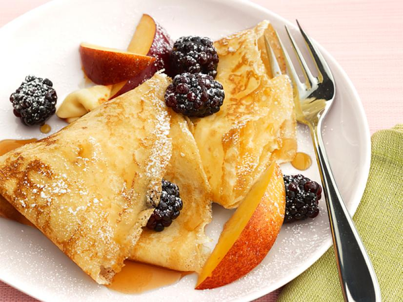

Swedish Pancakes
A Tuesday tradition

Description
Every Swede has a soft spot for pancakes, with many having a traditional 'Pancake Day' where they are prepared for dinner.
Like many other Swedish sweets, the ingredients are kept simple - you can add whatever you like after cooking, whether it be savory or syrupy!
Ingredients
- 8 tablespoons unsalted butter
- 1 cup all-purpose flour
- 1 3/4 cups whole milk
- 3 large eggs
- 1/2 teaspoon vanilla extract
- 1/4 teaspon salt
- To garnish: Confectioner's sugar, syrup and fresh fruit
Steps
- Melt half the butter; combine with flour, milk, eggs, vanilla and salt
in a blender.
- Warm a skillet; add 1 teaspoon of butter and coat pan
- Pour in 1/3 cup of batter; swirl to evenly coat the pan
- Cook for 1 1/2 minutes, then flip and cook for a further 30 seconds
- Transfer to a plate; keep warm in oven while preparing remaining pancakes
HOME